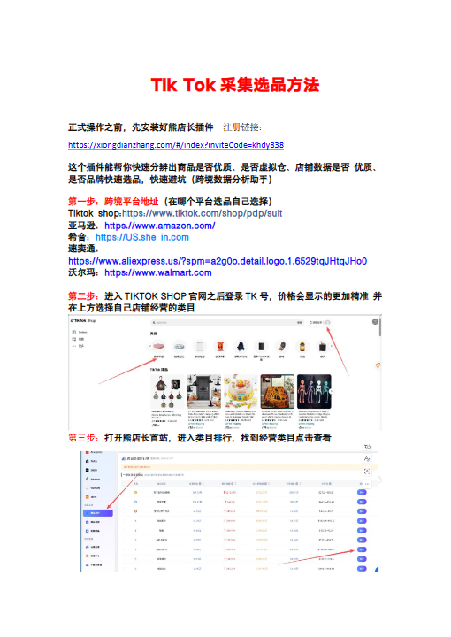
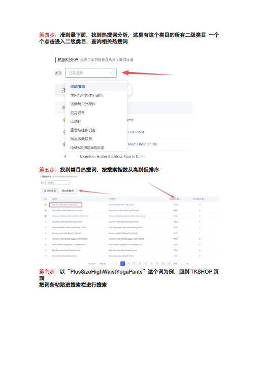
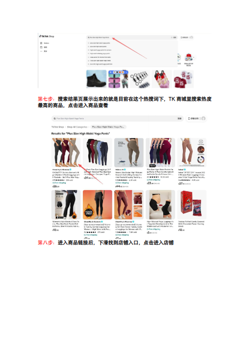
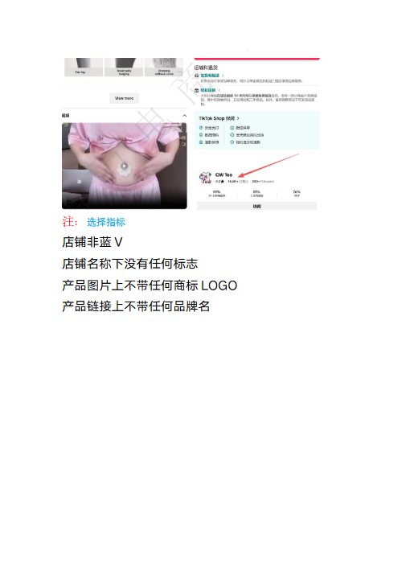

第 1 页

查看文字
TikTok采集选品方法正式操作之前，先安装好熊店长插件注册链接：https://xiongdianzhang.com/#/index?inviteCode=khdy838这个插件能帮你快速分辨出商品是否优质、是否虚拟仓、店铺数据是否优质、是否品牌快速选品，快速避坑（跨境数据分析助手）第一步：跨境平台地址（在哪个平台选品自己选择）Tiktokshop:https://www.tiktok.com/shop/pdp/sult亚马逊：https://www.amazon.com/希音：https://US.shein.com速卖通：https://www.aliexpress.us/?spm=a2g0o.detail.logo.1.6529tqJHtqJHo0沃尔玛：https://www.walmart.com第二步：进入TIKTOKSHOP官网之后登录TK号，价格会显示的更加精准并在上方选择自己店铺经营的类目第三步：打开熊店长首站，进入类目排行，找到经营类目点击查看
第 2 页

查看文字
第四步：滑到最下面，找到热搜词分析，这里有这个类目的所有二级类目一个个点击进入二级类目，查询相关热搜词第五步：找到类目热搜词，按搜索指数从高到低排序第六步：以“PlusSizeHighWaistYogaPants”这个词为例，回到TKSHOP页面把词条粘贴进搜索栏进行搜索
第 3 页

查看文字
第七步：搜索结果页展示出来的就是目前在这个热搜词下，TK商城里搜索热度最高的商品，点击进入商品查看第八步：进入商品链接后，下滑找到店铺入口，点击进入店铺
第 4 页

查看文字
注：选择指标店铺非蓝V店铺名称下没有任何标志产品图片上不带任何商标LOGO产品链接上不带任何品牌名